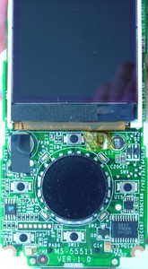

Rockbox SandiskE200HardwareComponents wiki page gathers all details and HW knowledge.
Here's pictures of my Sansa e260 internals. I had to use my digicam since my scanner isn't really good enough for this kind of task. I think the pics have details enough to at least be interesting.
There are additional photos on the e260 dev board page.
(Above) Here's all pieces when taken apart. The LCD is attached to the
PCB using a flat cable in the bottom end and two platic "arms" holding on to
the PCB in the upper end.
(Above) Here's the back/under side of the PCB. The PP5024B is the middle chip,
with the Hynix (believed to be (S)DRAM) above that:
The flash chips (shown below) are located on the separate tiny daughter
board to the very right. As I pointed out in the wiki, the numbers of my chips
are interesting when comparing with the 6GB and 2GB models, as it seems the
'16384' chip is 2GB while the 4GB one seems to be marked '32768'... (and yes,
the pic shows my fingers and tool since I didn't want to remove the plastic
pad completely but just pushed it gently for the photo to catch the numbers).
The number would then match megabits of course. 32768/8 = 4096 and 16384/8 =
2048...

Above is the front/upper side of the PCB with the wheel thing and LCD.
And a closup on the little "LC2" circuit in the lower right corner:
Above is front and back side of the stock 750mAh battery. Easily replacable.
I saved the best for last. The full 20MB e200 nude movie. video on faster site
{kind=link}
{kind=link}
{kind=link}
{kind=link}
{kind=link}
{kind=link}
{kind=link}